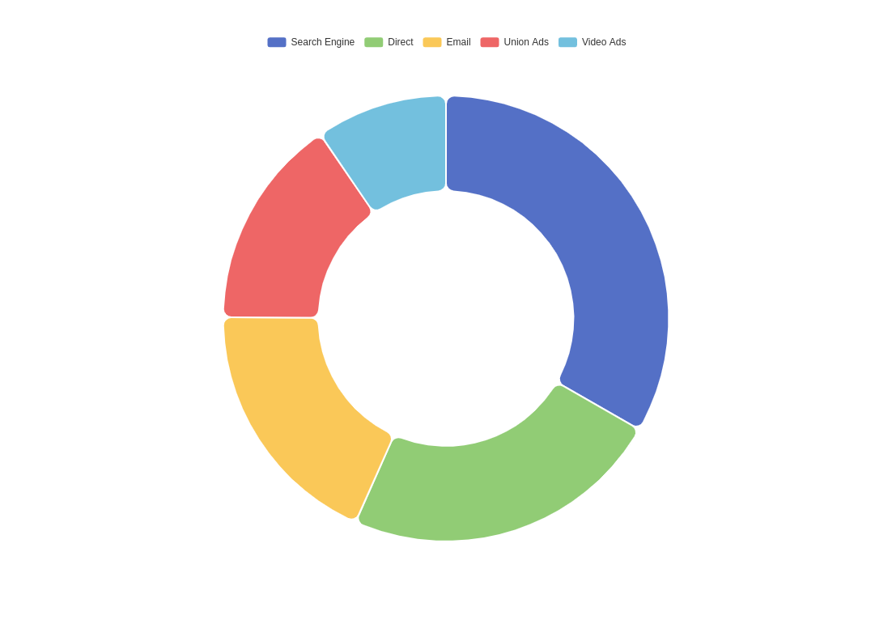

O Clube de Regatas do Flamengo, popularmente conhecido como Flamengo, é um dos clubes mais famosos e bem-sucedidos do Brasil. Sua história remonta ao final do século XIX, quando um grupo de remadores cariocas se uniu para fundar um clube de regatas. Em 1895, nasceu o Clube de Regatas do Flamengo.
Inicialmente, o Flamengo era exclusivamente dedicado à prática de esportes náuticos, como remo e vela. No entanto, ao longo das décadas seguintes, o clube expandiu suas atividades esportivas para incluir futebol, basquete, vôlei, entre outros.
O futebol entrou para a história do Flamengo em 1912, quando o clube decidiu formar uma equipe para competir em torneios locais. O Flamengo rapidamente se tornou um dos clubes mais importantes do Rio de Janeiro, conquistando títulos estaduais e se estabelecendo como um dos principais rivais dos outros grandes clubes da cidade, como Fluminense, Botafogo e Vasco da Gama.
Na década de 1980, o Flamengo alcançou o ápice de sua história no futebol. Sob o comando do técnico Paulo César Carpegiani e com jogadores como Zico, Júnior, Leandro e outros, o clube conquistou uma série de títulos importantes, incluindo a Copa Libertadores da América de 1981 e o Campeonato Mundial Interclubes no mesmo ano, além de diversos títulos nacionais e estaduais.
Desde então, o Flamengo continuou a ser uma força dominante no futebol brasileiro, conquistando mais títulos importantes, como a Copa do Brasil, o Campeonato Brasileiro e a Copa Libertadores novamente em 2019, desta vez sob o comando do técnico português Jorge Jesus. Essa equipe foi liderada por jogadores como Gabigol, Bruno Henrique e Arrascaeta, conquistando a admiração dos torcedores não só no Brasil, mas em todo o mundo.
O Flamengo não é apenas um clube de futebol, mas também um símbolo cultural e social no Brasil. Sua torcida, conhecida como "Nação Rubro-Negra", é uma das mais apaixonadas e numerosas do país, e o clube exerce uma grande influência em várias esferas da sociedade brasileira.
Ao longo de sua história, o Clube de Regatas do Flamengo demonstrou um compromisso inabalável com a excelência esportiva e a paixão de seus torcedores, consolidando-se como uma das instituições esportivas mais importantes e respeitadas do Brasil e do mundo.
Texto gerado por IA - ChatGPT